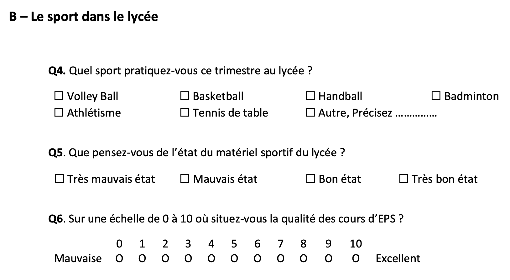
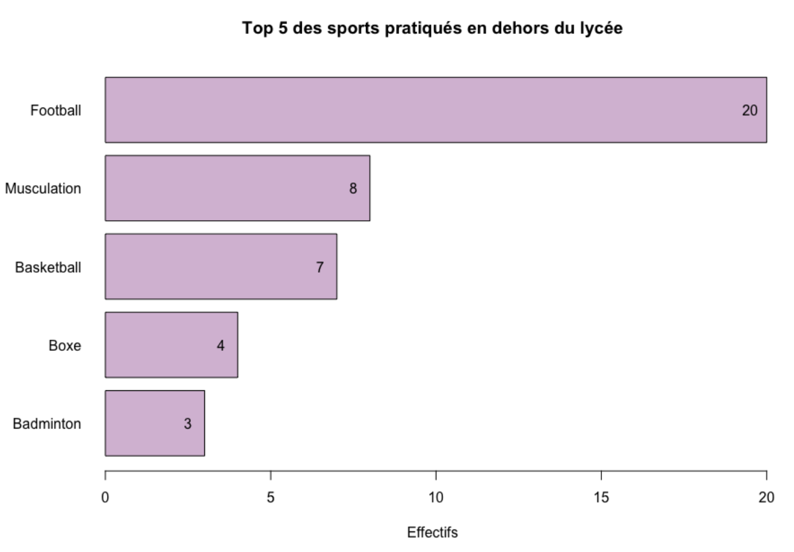

La pratique sportive chez les lycéens
Ce projet avait pour objectif d’étudier les habitudes sportives des élèves du lycée Paul-Cornu de Lisieux, à travers un sondage par convenance. La démarche a débuté par la création d’un questionnaire précis et d’un dictionnaire de variables, permettant d’aborder aussi bien la pratique du sport au sein de l’établissement qu’en dehors.
Voici un extrait du questionnaire proposé aux élèves : 
Les entretiens ont été réalisés directement au lycée, puis les réponses ont été saisies dans un tableau Excel pour assurer leur organisation. Après un nettoyage des données, l’analyse sur RStudio a mis en évidence plusieurs tendances intéressantes, notamment la liste des sports les plus populaires hors établissement. 
Pour plus de détails, consultez le rapport complet ici.
Questionnaire, données et scripts d’analyse R disponibles ici.